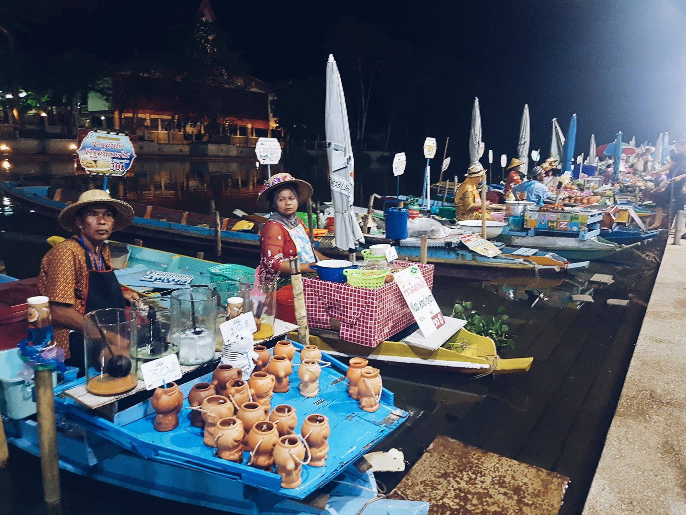
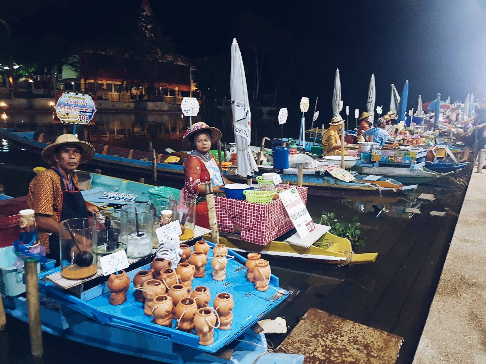

รายละเอียด
ตั้งอยู่ที่ท่าน้ำวัดคลองแห ตำบลคลองแห นอกตัวเมืองหาดใหญ่ไปเล็กน้อย เป็นตลาดน้ำแห่งแรกและแห่งเดียวของภาคใต้ แม้เป็นตลาดน้ำเกิดใหม่ แต่ได้รับความนิยมอย่างรวดเร็ว มีอาหารพื้นบ้านหลากหลายทั้งอาหารไทย มุสลิม รวมทั้งผลไม้ และสินค้าพื้นเมืองนานาชนิด มีเรือพายนับร้อยลำพายมาจอดเรียงรายให้บริการริมท่าน้ำวัดคลองแหอย่างเป็นระเบียบ และมีร้านค้าที่ริมฝั่งมากมายให้เดินเลือกชมอย่างเพลิดเพลิน เปิดตลาดในวันศุกร์ เสาร์ อาทิตย์ ตั้งแต่เวลาประมาณ 16.00 - 20.00 น. สามารถซื้อหาของฝากกลับบ้านหรือจะนั่งรับประทานที่ตลาดน้ำตามสะดวก โดยทางตลาดน้ำได้รณรงค์ให้ใช้ภาชนะใส่อาหารจำพวก กะลา กระบอกไม่ใผ่ หม้อดินเผา ที่ไม่เป็นพิษภัยต่อสิ่งแวดล้อม การเดินทาง ตลาดน้ำคลองแหตั้งอยู่ทางด้านทิศเหนือของตัวเมืองหาดใหญ่ จากหาดใหญ่สามารถเข้าถึงตลาดน้ำได้สองทาง ทางแรก เข้าทางถนนนิพัทธ์สงเคราะห์ 5 หรืออีกเส้นทางหนึ่ง ใช้ถนนลพบุรีราเมศวร์ (ทาง 414) และใช้เส้นทางที่จะไปสงขลา จะเห็นป้ายทางเข้าตลาดน้ำคลองแห ให้กลับรถเข้าตลาดน้ำ


 
